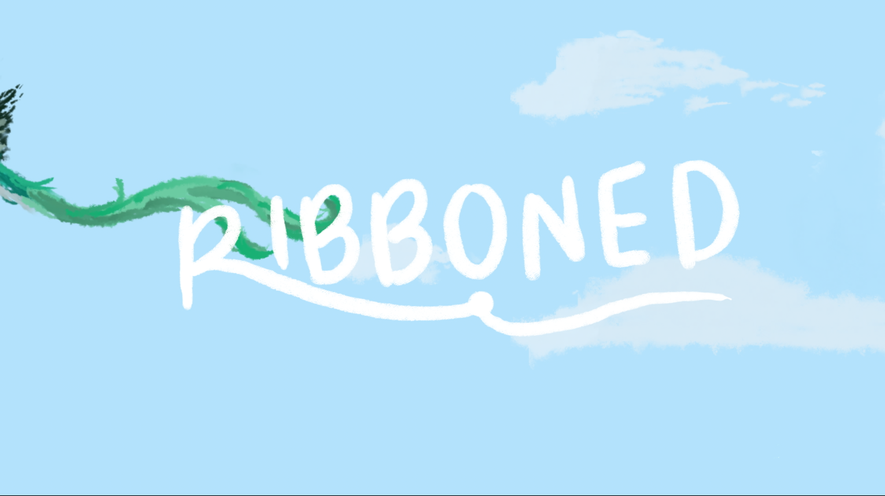

Ribboned
Short hand-drawn animation film
- TV Paint
- Premiere Pro
- Storyboarding
A folklorico dancer constrained by her ribbon skirt and a quetzal bird tethered back move in parallel, entangled in a shared struggle for freedom.
Ribboned was created as my final project for my Intermediate Animation course at Harvard during Spring 2026; all frames were hand-drawn on TV Paint and edited in Premiere Pro.


Inspiration and process
Originally meant to be a narrative on belonging and identity where a young girl rescues an injured bird and helps it find its way back into the skies, Ribboned soon evolved into a metaphorical exploration of freedom and constraint.
After multiple storyboarding sessions and discussions with my animation professor about what would be feasible for a hand-drawn film created in a few weeks, I decided to focus on the symbolic relationship between the two characters.


In Ribboned, the folklorico dancer is a girl held back by her ribbon skirt, representing the struggle of women, particularly Latina women, when navigating an unknown world.
In parallel, Guatemala's national quetzal bird symbolizes the natural desire for freedom and the ability to spread one's wings without constraints.

To establish the relationship between the girl and the bird, I studied each of their movements, imagining how traditional Mexican folklorico dance moves could be translated into the graceful flight of a quetzal.
Behind the Title and Colors

This project overall is a tribute to my Mexican-Guatemalan heritage. The resplendent quetzal is the national bird of Guatemala, featured on its flag. The color palette of my film was inspired by the intersection of the colors of the bird's plumage and the Mexican flag: green, white, and red.
The folklorico dress incorporates these main colors, which are also traditionally associated with the Mexican state of Jalisco, where my dad is from.
Also a hallmark of Jalisco are the ribbons stitched into the bottom of the skirt, as well as the ribbon tied into the dancer's braided hair.
Meanwhile, the quetzal bird gets its name from Nahuatl, meaning "large brilliant tail feather," which is often described as a trailing ribbon.
Yet, these are not the only inspirations for the film's title. For something to be "ribboned," is for it to be torn or ripped apart—which is what happens to the girl's skirt after it gets caught. A ribbon is also typically used to tie something, just as the bird gets tied up in parallel to the girl's skirt being caught.
Overall, both of these characters are ribboned in their own way; yet the ribbons with which they are adorned are what characterize them and give them their unique identities.